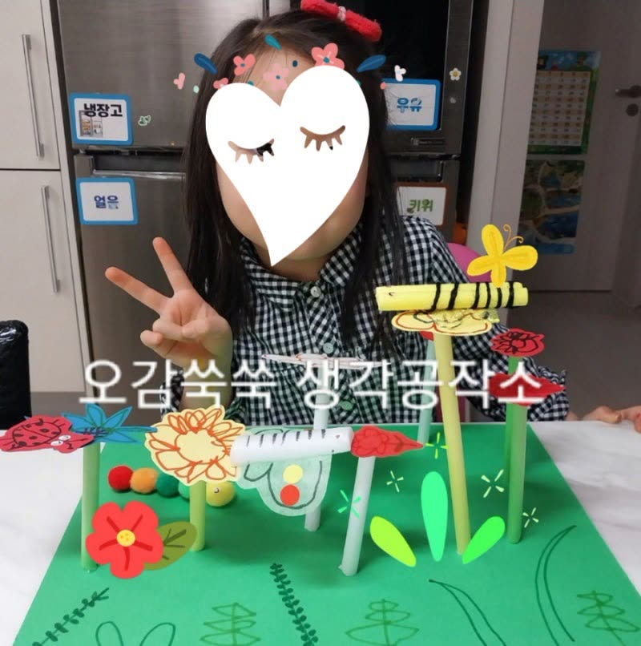
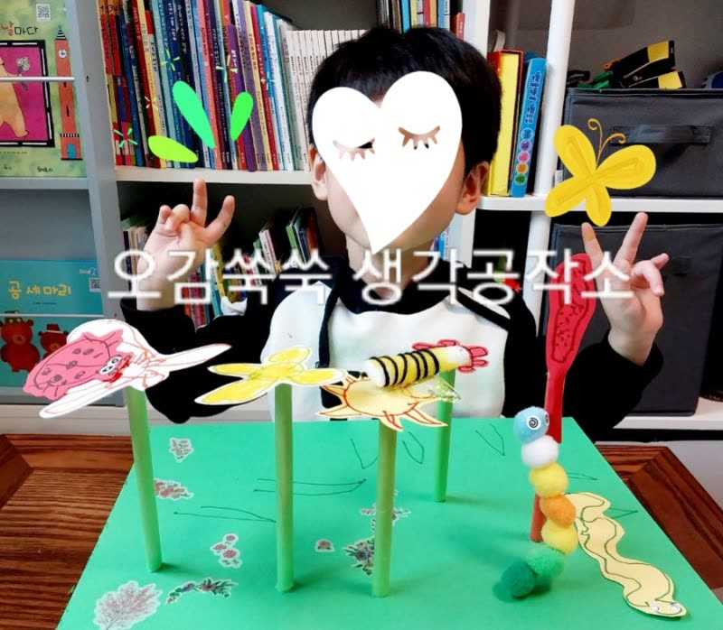
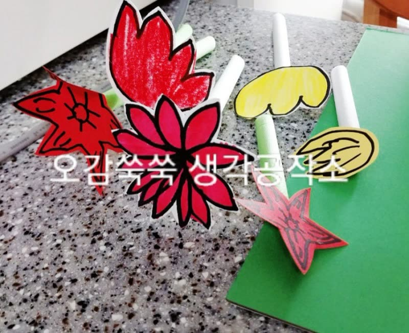

← 활동 이야기
2023.05.30
유아기 오감 발달이 학습 능력에 미치는 놀라운 영향
안녕하세요, 생각공작소 입니다 :)
오늘은 아이들의 호기심을 키우는 법,
유아기 언어 발달과 학습의 상관관계에 대해 이야기 해볼까 해요
어릴 때, 충분한 언어적 자극과 오감 발달을 위한
교육 환경을 제공받은 아이들의 경우,
아이들은 글자에 대한 호기심을 더욱 키우게 됩니다. 😊
이러한 호기심은 글읽기 능력 향상으로 이어지며,
결과적으로 더 많은 책을 읽고 내용을 깊이 이해하게 됩니다.

이로 인해 책읽기를 좋아하게 되고,
더 나아가 우수한 학습 성과를 이루는 현상을
매튜 효과라고 부릅니다
매튜 효과는 언어 능력이 발달하는 과정에서
듣기, 말하기, 읽기, 쓰기가 서로 긴밀하게 연결되어 있음을 보여줍니다.
즉, 한 영역에서의 성장은 다른 영역에도 긍정적인 영향을 미친다는 것을 의미합니다.


따라서, 아이들이 어릴 때부터
풍부한 언어적 환경과 오감 발달을 위한 다양한 학습 경험을
꾸준히 제공하는 것이 매우 중요합니다.
이러한 지원은 아이들이 건강한 언어 능력을 발달시키고,
나아가 전반적인 학습 능력을 향상시키는 데 기여할 것입니다.
인천시 남동구, 연수구, 미추홀구, 서구 에 위치한 #심리상담센터 로
전연령층과 전직종을 대상으로 #심리상담 을 도와주는 곳입니다. :)
평생을 미술치료와 심리상담에 종사하신 소장님과
실력과 경험 많은 상담사들이 당신을 기다리고 있습니다.
더욱 자세한 정보는 문의를 통해 확인해주세요 :)
T. 032-277-2007